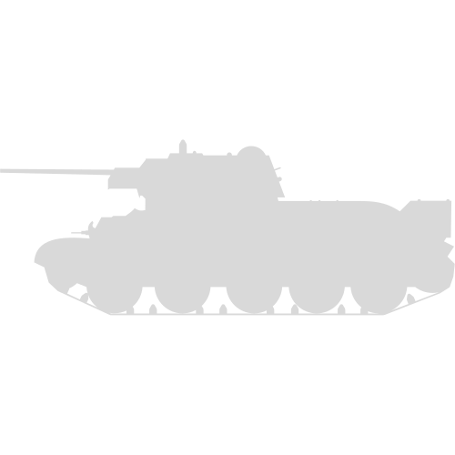
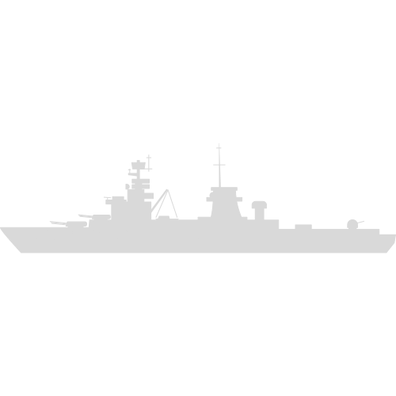

A-
A+


ONU faz apelo para retirada de civis em segurança da Ucrânia; veja as últimas notícias da guerra

Kim Jong Un e Putin conversam sobre laços mais fortes entre Coreia do Norte e Rússia

Invasão da Ucrânia: as notícias falsas sobre a guerra que continuam a viralizar
A Força Aérea da Ucrânia possui cerca de 200 aeronaves de combate, sendo a maioria de origem soviética ou russa. Os principais modelos são o Su-27, o MiG-29 e o Su-25. A Ucrânia também recebeu apoio dos Estados Unidos, que enviaram 12 caças F-16 em 2022, além de treinamento e assistência técnica¹. A Ucrânia planeja modernizar sua frota de caças com novos sistemas de armas e aviônicos, além de adquirir novos modelos no futuro
As Forças Terrestres da Ucrânia possuem cerca de 850 tanques ativos e mais de 1100 em reserva, sendo a maioria do tipo T-64 e T-72. Esses tanques são antigos e precisam de manutenção constante, além de serem vulneráveis aos sistemas antitanque russos. A Ucrânia vem desenvolvendo seu próprio tanque, o Oplot, que é baseado no T-84, mas com melhor blindagem, mobilidade e poder de fogo. A Ucrânia também recebeu tanques Leopard 2 da Alemanha e Abrams M1A2 dos Estados Unidos em 2022
A Ucrânia possui cerca de 1200 veículos blindados leves, sendo a maioria do tipo BTR-80 e BMP-2. Esses veículos são usados para transporte e apoio de infantaria, mas também sofrem com a falta de manutenção e proteção adequada. A Ucrânia vem desenvolvendo seus próprios veículos blindados leves, como o BTR-4 e o Dozor-B, que possuem maior velocidade, blindagem e armamento. A Ucrânia também recebeu veículos Humvee dos Estados Unidos e Iveco LMV da Itália em 2022
A Marinha da Ucrânia possui cerca de 30 navios de guerra, sendo a maioria de pequeno porte e baixa capacidade. A única fragata em serviço é a Hetman Sahaydachniy, que foi construída na União Soviética em 1993 e modernizada na Ucrânia em 2017. Ela possui um deslocamento de 3.100 toneladas e está equipada com mísseis antinavio, antiaéreos e torpedos. A Ucrânia também recebeu duas fragatas Oliver Hazard Perry dos Estados Unidos em 2022, que foram reformadas e atualizadas com novos sistemas de armas e sensores
Em memória das mais de 70 mil vidas perdidas nesta guerra